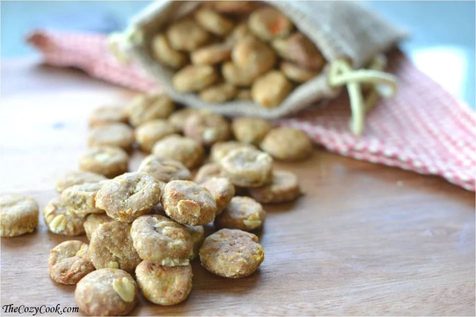
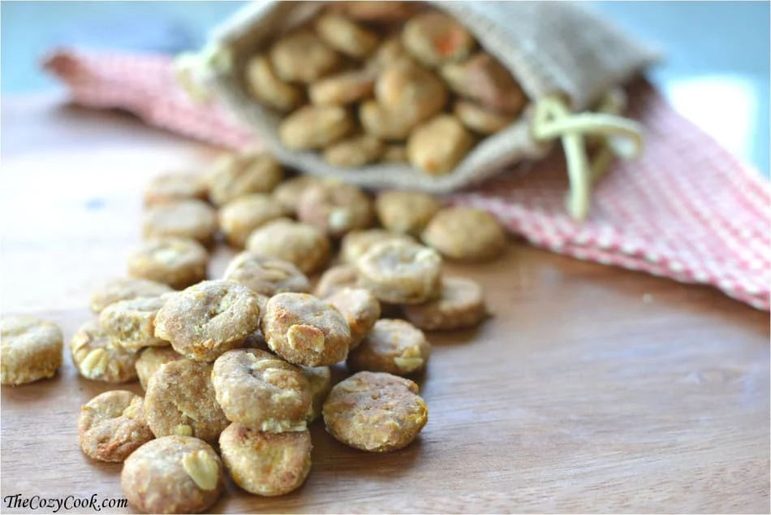
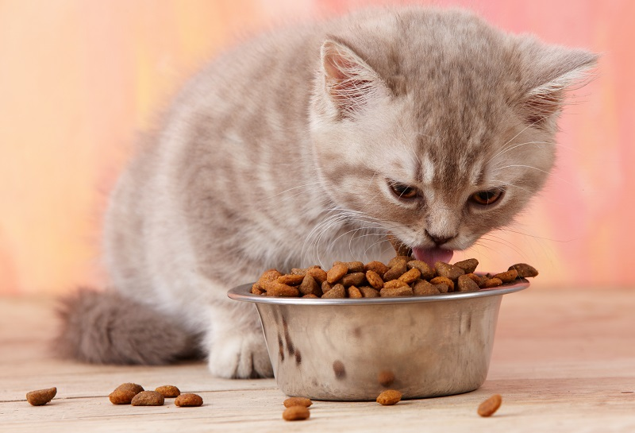
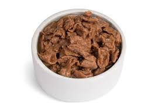
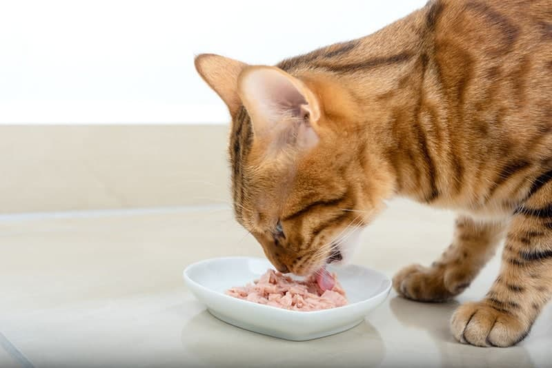
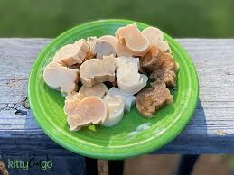
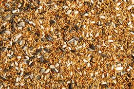
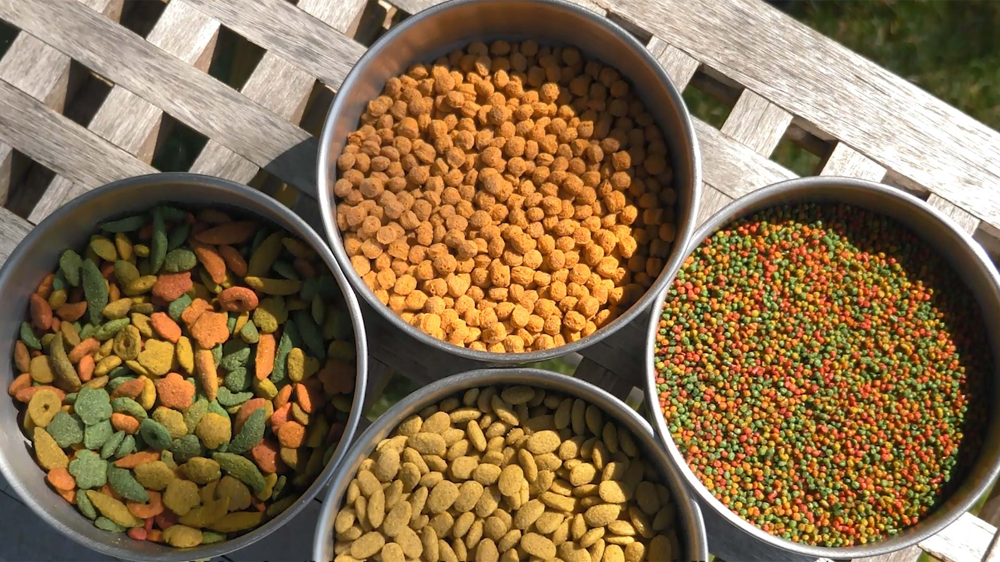
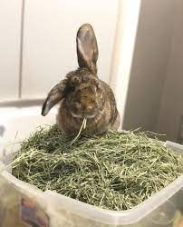
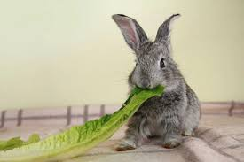

🐶 Dog Care & Food
Dogs are loyal, playful, and need regular care.
Common Foods:
Dry Kibble

Wet Canned Food

Boiled Chicken & Rice

Carrots & Apples
Ensure clean water, regular walks, and vaccinations for a healthy dog.
Dogs are loyal, playful, and need regular care.
Dry Kibble
Wet Canned Food
Boiled Chicken & Rice
Carrots & Apples
Ensure clean water, regular walks, and vaccinations for a healthy dog.
Cats are independent, clean, and loving companions.
Dry Cat Food
Wet Pouches
Boiled Fish
Cat Treats
Keep a litter box, scratching post, and clean water available.
Birds are colorful, cheerful, and need a safe environment.
Seeds & Grains
Apples & Bananas

Spinach & Carrots

Bird Pellets
Keep their cage clean and provide toys and perches.
Rabbits are gentle, adorable pets that enjoy hopping around.
Fresh Hay
Romaine Lettuce
Carrot Tops & Parsley

Rabbit Pellets

They need space to hop, chew toys, and regular grooming.